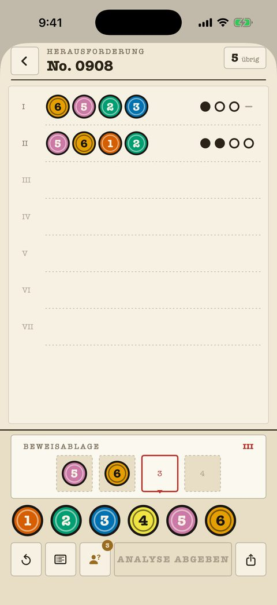

Klassische Fälle
240 Fälle von Anfänger bis Meister, jeder ein nummeriertes Blatt in der Akte. Der Versuchszähler sitzt oben rechts; die Marken sind pure Tinte — Punkt, Ring, Strich — und hängen nie von Farbe ab.
- Jede frühere Analyse bleibt zum Abgleich auf dem Blatt.
- Notizen auf dem Brett markieren ausgeschlossene und bestätigte Farben.
- Die Einstellung „Formmarken“ gibt jeder Farbe eine eigene Form.
- Die ersten 40 Fälle sind kostenlos.